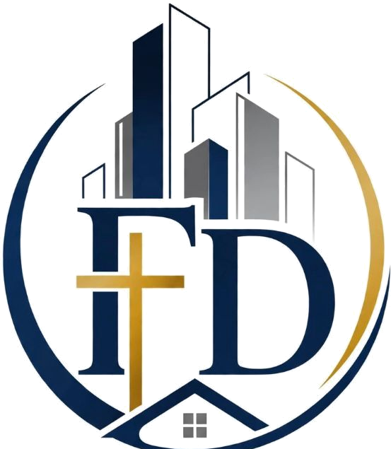

Education Access
Establish and operate a bursary pathway supporting qualifying candidates.

Dr. Faith DowelaniFOUNDATIONEDUCATION • MENTORSHIP • OPPORTUNITY
A purpose-led foundation connecting education, professional development and access to the built environment.
THE DR. FAITH DOWELANI FOUNDATION
NON-PROFIT COMPANY • SOUTH AFRICAThe Dr. Faith Dowelani Foundation is being established as a platform for education access, mentorship, professional development and meaningful industry partnerships.
Our execution framework brings together students, professionals, institutions and organisations around practical pathways into the built environment. The Foundation's work is designed to grow from institutional readiness and partnerships into bursary and mentorship programmes, corporate sponsorship and a visible public launch.
Every initiative is designed to strengthen access, capability, connection and long-term sustainability.
Establish and operate a bursary pathway supporting qualifying candidates.
Connect students and candidates with structured mentorship and built-environment development opportunities.
Build relationships across government, academia, professional bodies and major construction and property organisations.
Build a credible operating platform, secure sponsorship, communicate purpose and transition into sustainable operations.
Our initial programme architecture is structured to create a clear pathway from candidate support to professional opportunity.
A structured pathway to support qualifying students and candidates, including policy development, intake readiness and cohort selection.
Connecting emerging talent with mentors and professional development opportunities within the built environment.
A planned digital platform to support candidate registration, mentor participation and programme coordination.
Building a sponsorship and professional-sector network with construction, property and built-environment stakeholders.
Programme elements shown here reflect the Foundation's current establishment and launch framework and will be activated as the relevant approvals, partnerships and resources are secured.
The Foundation's partnership pathway is designed to connect education, government, professional institutions and the private sector.
Help us expand access to opportunity through sponsorship, mentorship, expertise or strategic partnership.
The launch framework coordinates institutional readiness, programme development, partnerships, communications and operational handover.
PMO setup, CIPC filing, brand identity and ministerial briefing.
NPO/PBO submissions, University of Pretoria MoU pathway and DHET engagement.
Bursary policy development plus corporate pitching and sponsorship securing.
Student/mentor portal and engagement with professional bodies.
PR/media drive, candidate registration and launch-event readiness.
Foundation launch, operational handover and first bursary/mentorship cohort announcement.
Whether you want to support education, mentor emerging talent, sponsor a programme or explore an institutional partnership, we'd like to hear from you.
EMAILEAZYDAZIT2@GMAIL.COM
REGISTERED OFFICE302 Sparaxis Street, Sinoville, Pretoria, Gauteng 0001
REGISTRATIONNPC 2026/711628/08